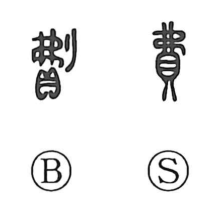

費

Kun: tsuiyasu, tsuieru | On: hi
expense ・ cost ・ to spend ・ to waste
Explanation
費 combines 貝, wealth or property, with 弗 as its sound element. Its early meaning is to scatter resources in expenditure, especially spending that wastes them. The emphasis falls on what is used up or lost through the outlay.
From wasteful spending, 費 broadens to expenditure generally: the money, materials, time, or effort required for something. The same depletion can affect the person. To expend the spirit or wear out one’s energies is also 費. A financial cost and an exhausting demand on the mind thus share the sense of resources being consumed.